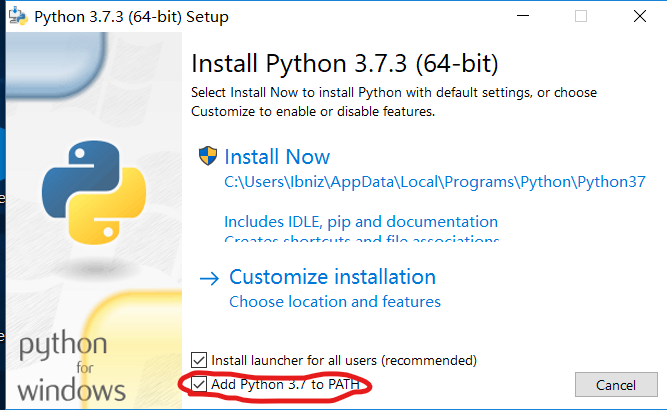
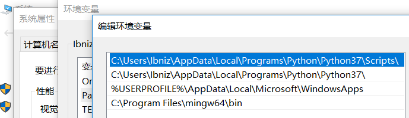
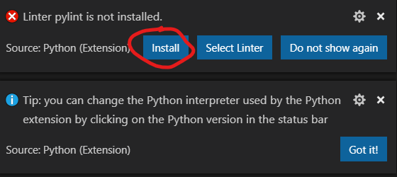
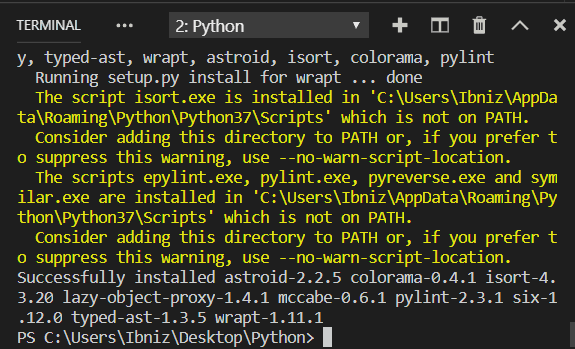
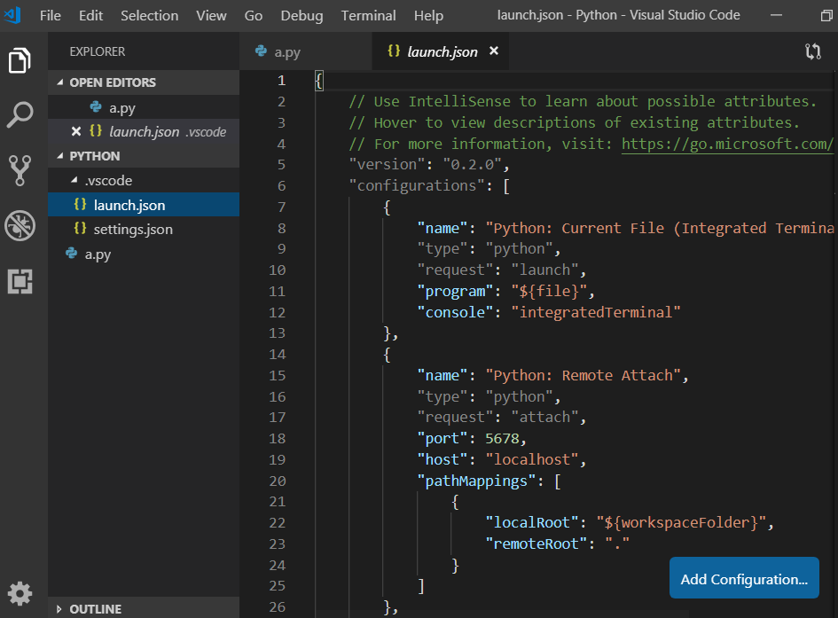
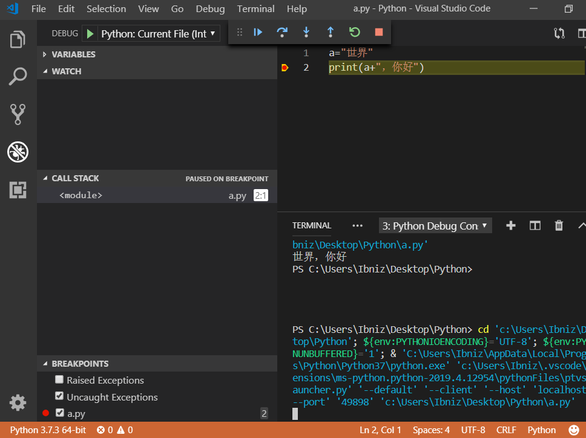

即图片中第二个
Visual Studio Code 建议选择System Installer
Python 建议选择安装包，省去添加环境变量的步骤
即图片中第二个
安装的时候记得勾选 添加Path，这样就不用自己添加环境变量了
可以看到Python已经自动添加了环境变量
首先我们新建一个用来存储 Python 源文件的文件夹，因为VS Code 的调试配置文件会自动释放到我们配置时的文件夹内，一个专用文件夹会方便很多。用 VS Code 打开我们新建的文件夹，新建一个.py文件
安装完成之后，Python 插件会给出pylint未安装的提示，点击install即可自动安装。

接下来我们写一段Python代码，转到调试界面，下拉列表选择Add Configuration，即可弹出如下界面，我们选择第一个选项，即可生成调试配置并调试当前代码
可以看到，运行成功
我们来看一下自动生成的launch.json(在.vscode文件夹下）,无特殊要求的话不用修改，常用的就是第一个选项

我们加个断点，按调试快捷键F5，可以命中断点,调试的两个快捷键与Visual Studio相同，F10逐过程，F11逐语句。

至此你的 VS Code 已经可以编写调试Python了。
VS Code 特别适合编写像Python这样的脚本语言，平时写个小工具，不需要IDE，打开便捷迅速，颜值还高。